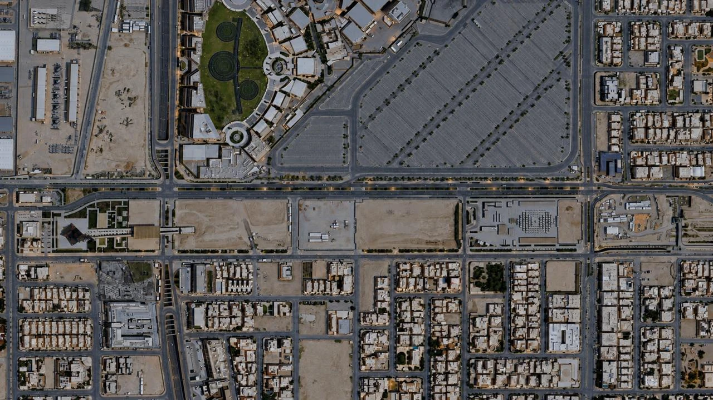
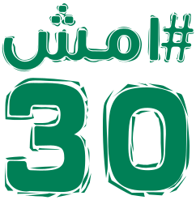

الموقع بالكامل

١٬٠٠٠ متر من التجارباختار منطقتك.
واكتشف التفاصيل.
واكتشف التفاصيل.
اضغط المنطقة للدخول إلى الممر من الأعلى
اسحب لاستعراض الممر · اضغط العنصر لعرض الرندر
مقياس موحد الممر ٥ م
أنت الآن في

المخطط التفاعليخطوة أقرب إلى الصحة